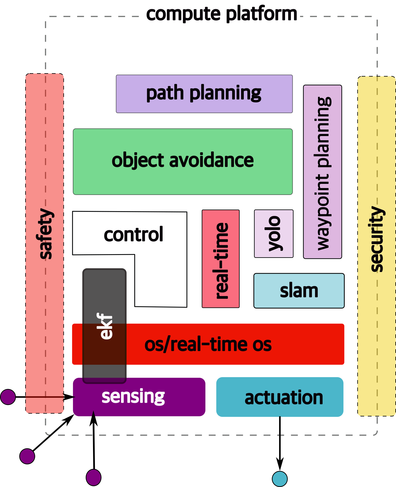

# introduction ## **Design of Autonomous Systems** ### csci 6907/4907-Section 86 ### Prof. **Sibin Mohan** --- ## autonomy --- ## autonomy what is "_autonomy_"? --- ## autonomy what is "_autonomy_"? we see various examples of it... <img src="./img/philippine_uav.png" height="250" style="display: inline-block; margin-right: 10px;" /> <img src="./img/white_tesla.png" height="250" style="display: inline-block;" /> --- ### what are the _aspects_ of autonomy? --- ### what are the _aspects_ of autonomy? ||| |------------|-----------------------------------------------------------------------------| | **perception** | how do you "_see_" the world around you? | --- ### what are the _aspects_ of autonomy? ||| |------------|-----------------------------------------------------------------------------| | **perception** | how do you "_see_" the world around you? | | **sensing** | various ways to perceive the world around you (_e.g_, camera, LiDar) | --- ### what are the _aspects_ of autonomy? ||| |------------|-----------------------------------------------------------------------------| | **perception** | how do you "_see_" the world around you? | | **sensing** | various ways to perceive the world around you (_e.g_, camera, LiDar) | | **compute** | what do you "_do_" with the information about the world? | --- ### what are the _aspects_ of autonomy? ||| |------------|-----------------------------------------------------------------------------| | **perception** | how do you "_see_" the world around you? | | **sensing** | various ways to perceive the world around you (_e.g_, camera, LiDar) | | **compute** | what do you "_do_" with the information about the world? | | **motion** | do your computations result in any "_physical_" changes? | --- ### what are the _aspects_ of autonomy? ||| |------------|-----------------------------------------------------------------------------| | **perception** | how do you "_see_" the world around you? | | **sensing** | various ways to perceive the world around you (_e.g_, camera, LiDar) | | **compute** | what do you "_do_" with the information about the world? | | **motion** | do your computations result in any "_physical_" changes? | | **actuation** | what "_actions_", if any, do you take for said physical changes? | --- ### what are the _aspects_ of autonomy? ||| |------------|-----------------------------------------------------------------------------| | **perception** | how do you "_see_" the world around you? | | **sensing** | various ways to perceive the world around you (_e.g_, camera, LiDar) | | **compute** | what do you "_do_" with the information about the world? | | **motion** | do your computations result in any "_physical_" changes? | | **actuation** | what "_actions_", if any, do you take for said physical changes? | | **planning** | can you do some "_higher order_" thinking <br> (_i.e.,_ not just your immediate next move) | --- ## let us define **autonomy** --- ## let us define **autonomy** ||| |-----|------| | Autonomy is the ability to | <img src="./img/robot_profile_view.jpg" height="275"> | || --- ## let us define **autonomy** ||| |-----|------| | Autonomy is the ability to <br> **perform given tasks** | <img src="./img/robot_profile_view.jpg" height="275"> | || --- ## let us define **autonomy** ||| |-----|------| | Autonomy is the ability to <br> **perform given tasks** <br> based on the system's **perception** | <img src="./img/robot_profile_view.jpg" height="275"> | || --- ## let us define **autonomy** ||| |-----|------| | Autonomy is the ability to <br> **perform given tasks** <br> based on the system's **perception** <br> without human intervention | <img src="./img/robot_profile_view.jpg" height="275"> | || --- ## let us define **autonomy** ||| |-----|------| | Autonomy is the ability to <br> **perform given tasks** <br> based on the system's perception <br> <scb>without</scb> human intervention | <img src="./img/robot_profile_view.jpg" height="275"> | || --- ## autonomous systems ||||| |------|------|------|------| |**cyber** | | | | --- ## autonomous systems ||||| |------|------|------|------| |**cyber** | <img src="./img/cps_software.png" height="275"> | | | --- ## autonomous systems ||||| |------|------|------|------| |**cyber** | <img src="./img/cps_software.png" height="275"> | <img src="./img/cps_networking.png" height="275"> | | --- ## autonomous systems ||||| |------|------|------|------| |**cyber** | <img src="./img/cps_software.png" height="275"> | <img src="./img/cps_networking.png" height="275"> | <img src="./img/cps_ecus.png" height="275"> | --- ## autonomous systems ||||| |------|------|------|------| |**cyber** | <img src="./img/cps_software.png" height="275"> | <img src="./img/cps_networking.png" height="275"> | <img src="./img/cps_ecus.png" height="275"> | |**physical** | | | | --- ## autonomous systems ||||| |------|------|------|------| |**cyber** | <img src="./img/cps_software.png" height="275"> | <img src="./img/cps_networking.png" height="275"> | <img src="./img/cps_ecus.png" height="275"> | |**physical** | <img src="./img/cps_sensors.png" height="275"> | | | --- ## autonomous systems ||||| |------|------|------|------| |**cyber** | <img src="./img/cps_software.png" height="275"> | <img src="./img/cps_networking.png" height="275"> | <img src="./img/cps_ecus.png" height="275"> | |**physical** | <img src="./img/cps_sensors.png" height="275"> | <img src="./img/cps_actuators.png" height="275"> | | --- ## autonomous systems ||||| |------|------|------|------| |**cyber** | <img src="./img/cps_software.png" height="275"> | <img src="./img/cps_networking.png" height="275"> | <img src="./img/cps_ecus.png" height="275"> | |**physical** | <img src="./img/cps_sensors.png" height="275"> | <img src="./img/cps_actuators.png" height="275"> | <img src="./img/cps_plants.png" height="275"> | --- ## autonomous systems ||||| |------|------|------|------| |**cyber** | <img src="./img/cps_software.png" height="275"> | <img src="./img/cps_networking.png" height="275"> | <img src="./img/cps_ecus.png" height="275"> | |**physical** | <img src="./img/cps_sensors.png" height="275"> | <img src="./img/cps_actuators.png" height="275"> | <img src="./img/cps_plants.png" height="275"> | || hence, they fall under the class of systems → **cyber-physical** systems --- ## sensors and actuators... <div style="border: 2px solid purple; display: inline-block; padding: 10px; background-color:rgb(236, 219, 250);"> <img src="./img/cps_sensors.png" height="250" /> </div> <div style="border: 2px solid purple; display: inline-block; padding: 10px; background-color:rgb(236, 219, 250);"> <img src="./img/cps_actuators.png" height="250" /> </div> --- ## sensors and actuators... <div style="border: 2px solid purple; display: inline-block; padding: 10px; background-color:rgb(236, 219, 250);"> <img src="./img/cps_sensors.png" height="250" /> </div> <div style="border: 2px solid purple; display: inline-block; padding: 10px; background-color:rgb(236, 219, 250);"> <img src="./img/cps_actuators.png" height="250" /> </div> ...are **everywhere**! --- ## sensors and actuators... <div style="border: 2px solid purple; display: inline-block; padding: 10px; background-color:rgb(236, 219, 250);"> <img src="./img/cps_sensors.png" height="250" /> </div> <div style="border: 2px solid purple; display: inline-block; padding: 10px; background-color:rgb(236, 219, 250);"> <img src="./img/cps_actuators.png" height="250" /> </div> ...are **everywhere**! the **embedded** components → interactions with the real world --- ## sensing and actuation in the real world --- ## sensing and actuation in the real world consider the following example of two cars...  --- ## sensing and actuation in the real world the second car is approaching the first  --- ## sensing and actuation in the real world **sensors** → constantly gathering data/sensing --- ## sensing and actuation in the real world **sensors** → constantly gathering data/sensing <div class="multicolumn"> <div> <ol> <li> periodic sensing </li> </ol> </div> <div> </div> </div> --- ## sensing and actuation in the real world on detection (of other car) → quickly **compute** what to do <img src="./img/cars_sensing/cars_sensing_4.png"> --- ## sensing and actuation in the real world on detection (of other car) → quickly **compute** what to do <div class="multicolumn"> <div> <ol> <li> periodic sensing </li> <li> computation </li> </ol> </div> <div> <img src="./img/cars_sensing/cars_sensing_4.png"> </div> </div> --- ## sensing and actuation in the real world take **physical action** → say by braking _in time_ <img src="./img/cars_sensing/cars_sensing_5.png"> --- ## sensing and actuation in the real world take **physical action** (actuation) → say by braking _in time_ <div class="multicolumn"> <div> <ol> <li> periodic sensing </li> <li> computation </li> <li> actuation </li> </ol> </div> <div> <img src="./img/cars_sensing/cars_sensing_5.png"> </div> </div> --- 1. periodic sensing 2. computation 3. actuation --- <div class="multicolumn"> <div> <ol> <li> periodic sensing </li> <li> computation </li> <li> actuation </li> </ol> </div> <div> </div> </div> --- <div class="multicolumn"> <div> <ol> <li> periodic sensing </li> <li> computation </li> <li> actuation </li> </ol> </div> <div> </div> </div> <br> <br> ## "**control**" --- ## remember this? on detection (of other car) → quickly **compute** what to do <img src="./img/cars_sensing/cars_sensing_4.png"> --- ## remember this? on detection (of other car) → <scb>quickly</scb> **compute** what to do <img src="./img/cars_sensing/cars_sensing_4.png"> --- ### "quickly" compute complete computation/actuation → before a **deadline** --- ### quickly compute complete computation/actuation → before a **deadline** <br> <br> ## real-time system --- ### finally, we come back to **sensing** --- ### finally, we come back to **sensing** <div class="multicolumn"> <div> <br> <ul> <li>we see <i>one</i> sensor (maybe LiDAR)</li> <ul> </div> <div> </div> </div> --- ### finally, we come back to **sensing** <div class="multicolumn"> <div> <br> <ul> <li>we see <i>one</i> sensor (maybe LiDAR)</li> <li>reality → <b>multiple</b> sensors</li> <ul> </div> <div> </div> </div> --- ### finally, we come back to **sensing** <div class="multicolumn"> <div> <br> <ul> <li>we see <i>one</i> sensor (maybe LiDAR)</li> <li>reality → <b>multiple</b> sensors</li> <li>cameras, radars, lidar, etc.</li> <ul> </div> <div> </div> </div> --- --- multiple sensors in an autonomous vehicle → need to _combine_ them somehow --- multiple sensors in an autonomous vehicle → need to _combine_ them somehow ## sensor fusion --- once we have information from the sensors (fused or otherwise)... <img src="./img/kalman_statistical_view.png" height="400"> ## state estimation (**kalman** filter, **ekf**) --- ### so far, we've (briefly) talked about... -v- ### so far, we've (briefly) talked about... <img src="./img/stack_architecture/stack_overview.2.png" height="200"> ## sensing -v- ### so far, we've (briefly) talked about... <img src="./img/stack_architecture/stack_overview.3.png" height="200"> ## actuation -v- ### well, we haven't discussed it... ...but there is an **operating system** (OS) in there <img src="./img/stack_architecture/stack_overview.4.png" height="300"> -v- ### well, we haven't discussed it... ...but there is an **operating system** (OS) in there <img src="./img/stack_architecture/stack_overview.4.png" height="300"> and it includes **real-time** mechanisms -v- ### we also (again, briefly) discussed... <img src="./img/stack_architecture/stack_overview.5.png" height="400"> ## ekf note: ekf is versatile; can be used for sensor fusion, slam, etc. -v- ### all of it integrates with... <img src="./img/stack_architecture/stack_overview.6.png" height="500"> ## control -v- ### some **real-time** functions in there... <img src="./img/stack_architecture/stack_overview.7.png" height="500"> like _braking_, _engine control_ --- if we design such a system... <img src="./img/stack_architecture/stack_overview.7.png" height="500"> --- if we design such a system... <img src="./img/stack_architecture/stack_overview.7.png" height="500"> ### is it "**autonomous**"? --- ### missing some "higher order" functions --- ### missing some "higher order" functions so, from the perspective of the autonomous system, --- ### missing some "higher order" functions so, from the perspective of the autonomous system, - _where_ am I? --- ### missing some "higher order" functions so, from the perspective of the autonomous system, - _where_ am I? - _where_ do I need to go? --- ### missing some "higher order" functions so, from the perspective of the autonomous system, - _where_ am I? - _where_ do I need to go? - _how_ do I get there? --- ### missing some "higher order" functions so, from the perspective of the autonomous system, - _where_ am I? - _where_ do I need to go? - _how_ do I get there? - _what_ obstacles may I face? --- ### missing some "higher order" functions so, from the perspective of the autonomous system, - _where_ am I? - _where_ do I need to go? - _how_ do I get there? - _what_ obstacles may I face? - _how_ do I avoid them? --- let's not forget the most important question of all... <img src="./img/drax_gamora.avif" height="700"> ### **why** is gamora? --- ## high-order functions how do we tackle these issues: - _where_ am I? - _where_ do I need to go? - _how_ do I get there? - _what_ obstacles may I face? - _how_ do I avoid them? --- ## high-order functions <div class="multicolumn"> <div> <br> <ul> <li>where am I?</li> <li>where do I need to go?</li> <li>how do I get there?</li> <li>what obstacles may I face?</li> <li>how do I avoid them?</li> </ul> </div> <div> <img src="./img/stack_architecture/stack_overview.7.png" height="500"> </div> </div> --- ### let's look at **additional functionality** that is required -v- ## slam simultaneous localization and mapping <img src="./img/stack_architecture/stack_overview.8.png" height="600"> figure out **where** we are -v- ## waypoint detection <img src="./img/stack_architecture/stack_overview.9.png" height="600"> how to move in the _right_ direction at the **micro** level, _i.e.,_ find **waypoints** -v- ## yolo "you only live once" -v- ## yolo "you only **look** once" -v- ## yolo "you only **look** once" <img src="./img/stack_architecture/stack_overview.10.png" height="600"> object **detection** model that uses convolutional neural networks (cnns) -v- ## object avoidance <img src="./img/stack_architecture/stack_overview.11.png" height="600"> avoid objects in **immediate path** -v- ## path planning <img src="./img/stack_architecture/stack_overview.12.png" height="650"> how to get to **destination** at the **macro** level → uses waypoints --- ## compute platform to run all of these functions <img src="./img/stack_architecture/stack_overview.13.png" height="700"> low power, embedded platforms --- ### still some **non-functional** requirements remain note: any guesses what they could be? --- ## safety! <img src="./img/stack_architecture/stack_overview.14.png" height="700"> safety of → operator, other people, the vehicle, environment --- ## safety! <img src="./img/stack_architecture/stack_overview.14.png" height="600"> safety of → operator, other people, the vehicle, environment <br> ### **cross-cutting** issue → affected <scb>by</scb> **all** parts of system --- ## security  ### cross-cutting issue → <scb>can affect</scb> **all** components --- a (loose) map of this course